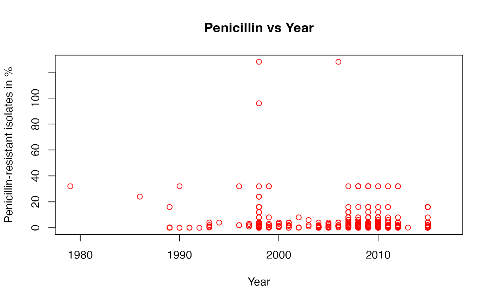
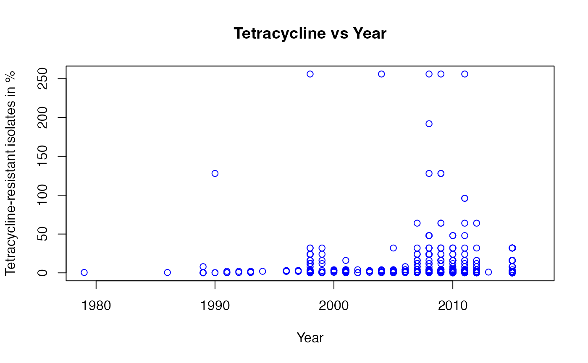
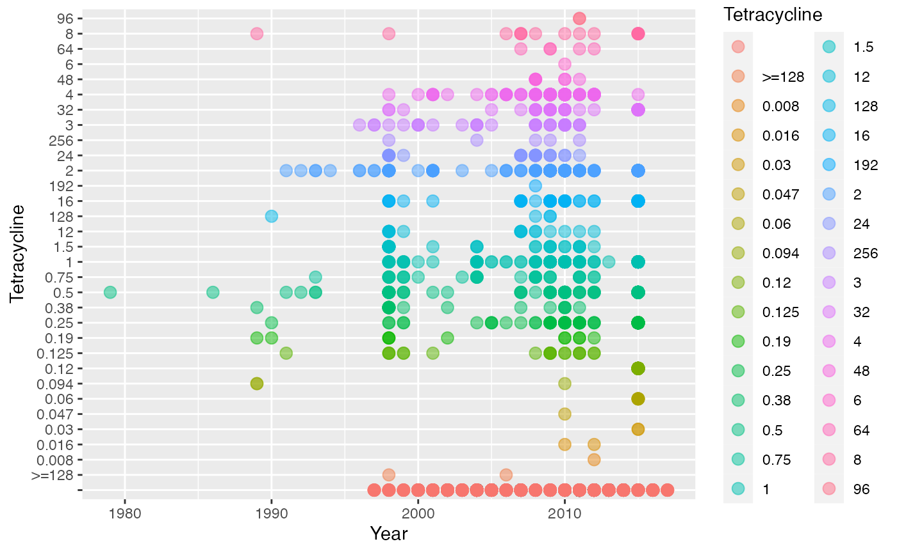

full_data
full_data.Rmd
summary(Rxresistance)
#> Sample_ID Year Country Continent
#> Length:3786 Min. :1979 Length:3786 Length:3786
#> Class :character 1st Qu.:2009 Class :character Class :character
#> Mode :character Median :2012 Mode :character Mode :character
#> Mean :2010
#> 3rd Qu.:2013
#> Max. :2017
#> NA's :250
#> Beta.lactamase Azithromycin Ciprofloxacin Ceftriaxone
#> Length:3786 Length:3786 Length:3786 Length:3786
#> Class :character Class :character Class :character Class :character
#> Mode :character Mode :character Mode :character Mode :character
#>
#>
#>
#>
#> Cefixime Tetracycline Penicillin NG_MAST
#> Length:3786 Length:3786 Length:3786 Length:3786
#> Class :character Class :character Class :character Class :character
#> Mode :character Mode :character Mode :character Mode :character
#>
#>
#>
#>
#> Group azm_mic cip_mic cro_mic
#> Min. : 0.0 Min. : 0.004 Min. : 0.001 Min. :0.0003
#> 1st Qu.: 134.0 1st Qu.: 0.125 1st Qu.: 0.004 1st Qu.:0.0040
#> Median : 275.0 Median : 0.380 Median : 0.094 Median :0.0150
#> Mean : 394.3 Mean : 17.119 Mean : 7.429 Mean :0.0300
#> 3rd Qu.: 618.0 3rd Qu.: 1.000 3rd Qu.:16.000 3rd Qu.:0.0320
#> Max. :1078.0 Max. :1024.000 Max. :64.000 Max. :2.0000
#> NA's :308 NA's :698 NA's :352
#> cfx_mic tet_mic pen_mic log2_azm_mic
#> Min. :0.0010 Min. : 0.008 Min. : 0.002 Min. :-7.966
#> 1st Qu.:0.0150 1st Qu.: 0.500 1st Qu.: 0.250 1st Qu.:-3.000
#> Median :0.0160 Median : 2.000 Median : 0.500 Median :-1.396
#> Mean :0.0644 Mean : 7.386 Mean : 3.044 Mean :-1.108
#> 3rd Qu.:0.0600 3rd Qu.: 4.000 3rd Qu.: 2.000 3rd Qu.: 0.000
#> Max. :8.0000 Max. :256.000 Max. :512.000 Max. :10.000
#> NA's :385 NA's :2314 NA's :2321 NA's :308
#> log2_cip_mic log2_cro_mic log2_cfx_mic log2_tet_mic
#> Min. :-9.966 Min. :-11.966 Min. :-9.966 Min. :-6.9658
#> 1st Qu.:-7.966 1st Qu.: -7.966 1st Qu.:-6.059 1st Qu.:-1.0000
#> Median :-3.411 Median : -6.059 Median :-5.966 Median : 1.0000
#> Mean :-2.044 Mean : -6.204 Mean :-5.164 Mean : 0.8355
#> 3rd Qu.: 4.000 3rd Qu.: -4.966 3rd Qu.:-4.059 3rd Qu.: 2.0000
#> Max. : 6.000 Max. : 1.000 Max. : 3.000 Max. : 8.0000
#> NA's :698 NA's :352 NA's :385 NA's :2314
#> log2_pen_mic azm_sr cip_sr cro_sr
#> Min. :-8.9658 Min. :0.0000 Min. :0.0000 Min. :0.0000
#> 1st Qu.:-2.0000 1st Qu.:0.0000 1st Qu.:0.0000 1st Qu.:0.0000
#> Median :-1.0000 Median :0.0000 Median :0.0000 Median :0.0000
#> Mean :-0.4278 Mean :0.1285 Mean :0.4624 Mean :0.0012
#> 3rd Qu.: 1.0000 3rd Qu.:0.0000 3rd Qu.:1.0000 3rd Qu.:0.0000
#> Max. : 9.0000 Max. :1.0000 Max. :1.0000 Max. :1.0000
#> NA's :2321 NA's :308 NA's :698 NA's :352
#> cfx_sr tet_sr pen_sr
#> Min. :0.0000 Min. :0.0000 Min. :0.0000
#> 1st Qu.:0.0000 1st Qu.:0.0000 1st Qu.:0.0000
#> Median :0.0000 Median :1.0000 Median :0.0000
#> Mean :0.0015 Mean :0.5543 Mean :0.3474
#> 3rd Qu.:0.0000 3rd Qu.:1.0000 3rd Qu.:1.0000
#> Max. :1.0000 Max. :1.0000 Max. :1.0000
#> NA's :385 NA's :2314 NA's :2321
plot(Rxresistance$Penicillin~Rxresistance$Year, xlab = "Year", ylab="Penicillin-resistant isolates in %", main = "Penicillin vs Year", col = "red") +
geom_line()
#> Warning in xy.coords(x, y, xlabel, ylabel, log): NAs introduced by coercion
#> NULL
plot(Rxresistance$Tetracycline~Rxresistance$Year, xlab = "Year", ylab="Tetracycline-resistant isolates in %", main = "Tetracycline vs Year", col = "blue")
#> Warning in xy.coords(x, y, xlabel, ylabel, log): NAs introduced by coercion
Looking at the two graphs presented, which depict the percentage of resistant isolates from 1980 to 2014, we can see that a narrow spectrum antibiotic like Penicillin has a higher percentage in years between 2000 and 2010 while a broad spectrum antibiotic like Tetracycline has higher percentages in 2010s. This would make sense because broad spectrum antibiotics typically generate selective pressure against the bacteria, causing them to mutate or transfer resistant inducing genes meanwhile, not so common antibiotics like Penicillin are more effective.
ggplot(data = Rxresistance, mapping = aes(x = Year, y= Tetracycline, color = Tetracycline)) +
geom_point(size = 3, alpha = 0.5)
#> Warning: Removed 250 rows containing missing values (`geom_point()`).